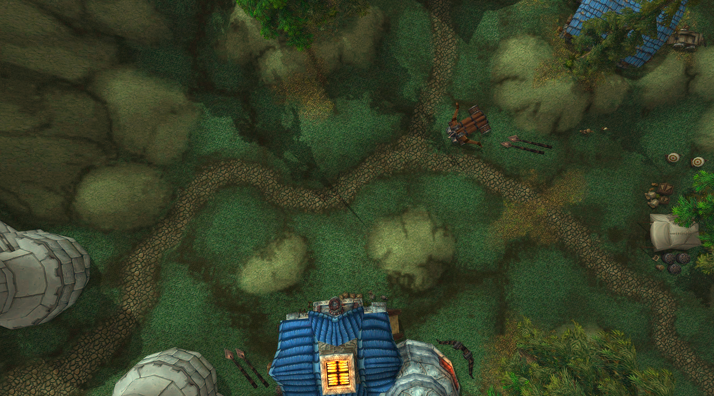
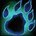
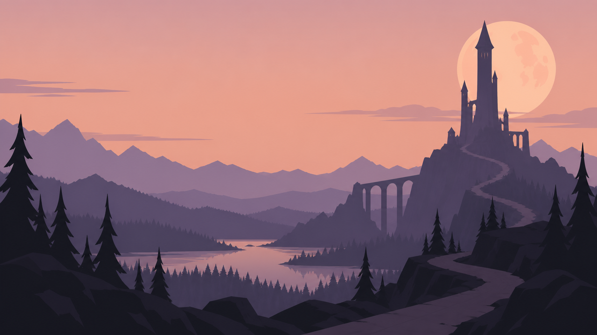

Your next raid,
ready.
A plan for the players you're bringing.
Build the groups, assign the jobs, and share it in Discord.
Rage Winterchill

Rage WinterchillSelect a player to follow their position, assignment, and target. Illustrative raid plan; positions are examples.
Start with your raid. Auto-Assign fills empty tank, healer, and Misdirection slots from the selected roster for you to review.
Keep the whole encounter close. Boss plans, trash waves, and bestiary notes stay together.
One healer
from ready.
See the spot you need to fill. Bring in Raid Helper signups, arrange your groups, and check role and buff coverage before you post to Discord.
Karazhan

ThornDruidTankKaizen automatically cross-checks raid logs against your roster to track attendance.
Illustrative attendance check · separate from the upcoming raid above- Rostered players
- 10
- Matched in the log
- 9
- Needs review
- 1
Unmatched players stay visible for review.
Room for the whole raid week. Build separate rosters for each raid. Keep unassigned, benched, absent, and tentative players in view.
Fill the last spot. Add a guildie or a one-off pug. Auto-Fill gets your groups started; you can adjust them before posting.
Illustrative 10-player roster: 2 tanks, 1 healer, 6 damage. The final healer slot is open.
Right where
your guild is.
Import your guild roster and Raid Helper signups. Arrange your groups, check buff coverage, and post the finished roster and encounter plan to Discord.
Attendance is cross-checked automatically against your raid logs and roster. Your raiders get the plan in the channels they already use.
Illustrative post layout. This preview does not send messages.
Take something
into the next pull.
Bring in a Warcraft Logs report for a raid-wide debrief.
Review AI-drafted personal reports across every fight,
then send them privately to each player in Discord.
Aerion's raid review
A repeated early death
Example finding: Aerion died early on several attempts. The personal report brings those moments together across the fights in this log.
A focus for next time
Review the events leading up to each death. Check positioning and available defensives with the raider before deciding what to change.
Officer review comes before sending. The personal report is delivered privately using the player's Discord ID.
Illustrative draft, not a real player assessment. Raid-wide fallout reports can also be posted to your chosen Discord channel.
A place for
your people.
Share your progression, raid schedule, and recruitment details on a public guild page.
Members, officers, and the GM get the access you choose. Visitors can look around.
Invite the bot to register your guild. Sign in with Discord, Google, or email.
Kaizen
The Burning CrusadePublic page concept · illustrative guild details

The Burning Crusade.
With your people.
Make it a raid night.
Start with your guild. Plan your first raid.
Create account